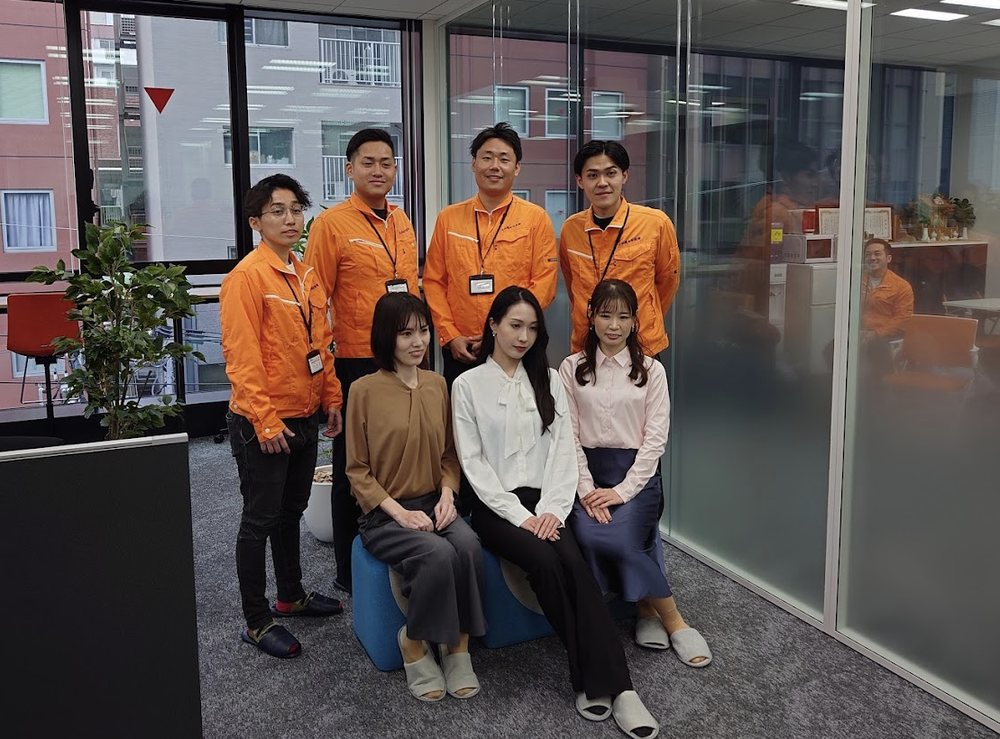

事業について
「声をかけてアポイントを取る」だけでは終わらない。事業そのものを、学生がつくります。
なぜ、この事業を立ち上げたのか
就職活動で「学生時代に力を入れたこと」を聞かれたとき、多くの人が困ります。がんばった実感はあるのに、何を考え、どう判断し、何を成し遂げたのかを、具体的な言葉にできないからです。
この事業部は、そこを埋めるためにつくりました。私たちは太陽光発電や蓄電池といった、暮らしのエネルギーに関わる商品を扱っています。関心は年々高まっている一方で、「知る機会がなかった」というだけで検討の入口に立てていないご家庭がまだ数多くある。その最初のきっかけをつくる事業を、学生の皆さんと一緒にゼロから立ち上げることにしました。
誰に届けるのか。いくらの収益とコストで成り立たせるのか。どの数字を追い、チームをどう動かすのか。答えは用意していません。皆さん自身が考え、議論し、決めていきます。そしてその結論は、一冊の事業計画書として形に残ります。
この事業は、まだ生まれたばかりです。だからこそ、いま参加する皆さんが第一期生。「決まっていることをこなす」のではなく、「これから決めていく」側に立てる。この一年は、二度と巡ってきません。
学生が担当する範囲
お客さまとの最初の接点づくりに集中していただきます。

声かけ ～ ヒアリング ～ アポイント獲得
家電量販店・ホームセンターの催事ブースで、来場されたお客さまに声をかけます。ご家族の状況や電気代のお困りごとをうかがい、「一度くわしく話を聞いてみたい」と思っていただけたら、日程のお約束を取ります。
その先の商談・見積り・契約は、経験豊富な社員が引き継ぎます。金額や契約条件の話を学生が背負うことはありません。
だからこそ、「どう伝えれば興味を持ってもらえるか」に集中して力を伸ばせます。
自分たちで決める、事業計画の中身
このプログラムの一番の特徴です。決められた作業をこなすのではなく、事業の判断そのものをチームで行います。
誰に届けるかを決める
来場されるお客さまのうち、どんな方に最も価値を届けられるのか。年齢層・住まいの状況・関心度から、狙うべき人物像をチームで定義します。
数字の設計をする
1件の成約でいくらの収益が生まれ、どれだけのコストがかかるのか。そこから逆算して、1日に何人へ声をかけるべきかまで落とし込みます。
追いかける指標を決める
声かけ数、アポイント獲得率、成約率。どの数字を見れば改善点が分かるのかを設計し、毎週の振り返りで検証します。
伝え方をつくる
最初の一言、断られたときの切り返し。実際の現場で試した結果を持ち寄り、チーム共通の「型」に育てていきます。
チームの動き方を決める
シフトの組み方、役割分担、情報共有のルール。気持ちよく成果を出せるチームの形を自分たちで設計します。
結論を、言葉にして残す
議論して決めたことは、その理由とあわせて事業計画書にまとめます。最終的に一冊の計画書として形に残ります。
社員がしっかり支えます
-
学生チーム
催事ブースでの声かけ・ヒアリング・アポイント獲得を担当。獲得した情報は所定の方法で社内へ共有します。
-
営業担当への引き継ぎ
学生チームが獲得したアポイントを社員が受け取り、担当者の割り当てと日程の調整を行います。ここから先は社員の仕事です。
-
商談・ご契約
お客さまのもとへ社員が訪問し、提案から契約までを担当します。その結果は必ず学生チームにフィードバックされます。
-
毎週金曜のミーティング
結果の共有と振り返り、営業研修、その週に頑張ったメンバーの表彰まで。学んだことをチーム全体の財産にする時間です。